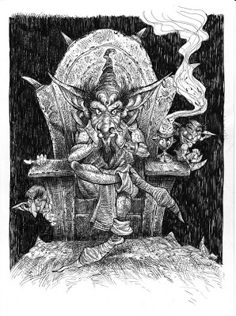

Goblins!
You start down your chosen path. After several minutes of walking, you come to a gate made of gold. Seeing the gate, you know you must be close to the crown. As you approach the gate to inspect it, you hear shuffling behind you. You begin to turn around to look, but immediately feel the cold edge of a knife against your throat. The creature behind you orders the others to to take any gold on you. Luckily for you, you still have 5 gold left in your pocket. You feel small green hands reach into your pockets and remove every last gold coin. The blade disappears from your throat, and you spin around to see the thieves, but they vanished just as quickly as they appeared
You hear the gate behind you begin to groan. You turn around, and the gate begins to open. You must be close now.